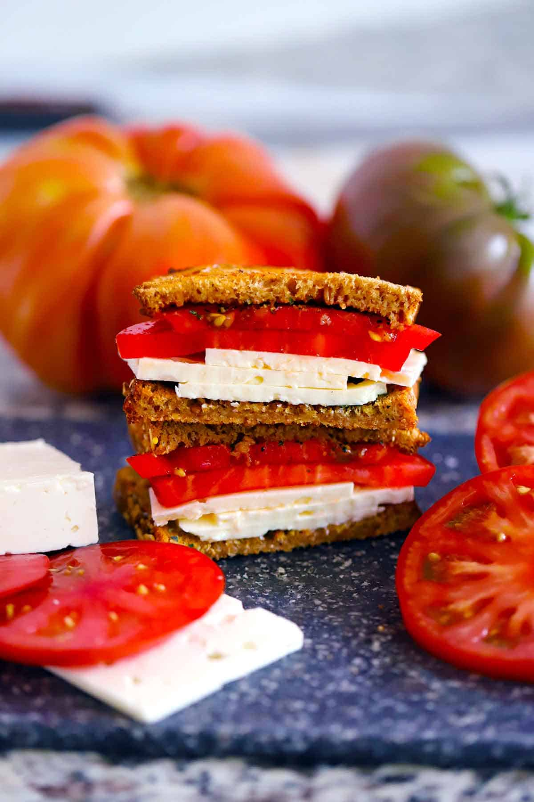

Greek Feta and Tomato Sandwich

Description
You’ve heard of Southern tomato sandwiches. You’ve had thick slices of ripe tomato on a BLT. And I’m sure you’ve had an Italian Caprese sandwich with tomatoes, mozzarella, and basil. But have you ever had the Greek version of a tomato sandwich with sliced feta cheese? It will swiftly become your new favorite kind of tomato sandwich!
Ingredients
- Sliced bread
- Feta cheese
- Tomato
- Extra-virgin olive oil
- Fresh garlic clove
- Dried oregano
- Sea salt and black pepper
Steps
- Toast your bread
- Drizzle the bread with olive oil as soon as it comes out of the toaster while it’s still warm.
- Immediately rub the cut side of a clove of garlic on top of the oil.
- Sprinkle with dried oregano, then layer sliced feta and tomatoes on top of one slice of bread.
- Sprinkle on some sea salt and black pepper.
- Place the other piece of bread oil-side down on top of the assembled sandwich.
Home